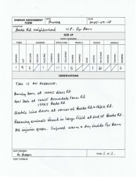
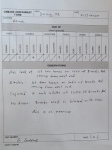
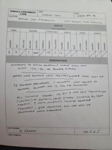
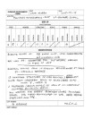

151, KI7DGC, VARA FM, W7YAM-12, 145.090, LAKE OSWEGO, CLACKAMAS, OREGON

Original image size: 569 x 532 pixels, 96 dpi, 108.8 kbytes
Your teammates' exercise material is below. You should see their CERT Form #1. Each AUXC should have at least one thumbnail. Click on the thumbnail to see the original image.
Use the browser's back button to return to this page from the full-sized image.
Your exercise requirements this week were to:
Note that if an AUXC checked in through multiple RMSs, then each check-in sentence is provided at the top of their information.
Jump to a specific AUXC's check-in material:
151, KI7DGC, VARA FM, W7YAM-12, 145.090, LAKE OSWEGO, CLACKAMAS, OREGON
Original image size: 569 x 532 pixels, 96 dpi, 108.8 kbytes
151, K7QQB, VARA FM, W7OWO-10, 145.030, AURORA, CLACKAMAS, OREGON
Original image size: 782 x 601 pixels, 96 dpi, 99.9 kbytes
151, KI7FCG, PACKET, K7YVO-10, 144.930, BORING, CLACKAMAS, OR
Original image size: 694 x 518 pixels, 96 dpi, 51.9 kbytes
151, KI7BDP, VARA FM, KD7ZDO-11, 145.770, OREGON CITY, CLACKAMAS, OR

***THIS IS AN EXERCISE***
SEE ATTACHED CERT FORM #1 FROM G. GREENE.
GAFFNEY LANE NEIGHBOURHOOD, CLAIRMONT MOBILE HOME PARK SURVEY
SUMMARY:
3 ACTIVE STUCTURE FIRES, 7 OUT.
1 WATER LEAK/BROKEN PIPE
15 DAMAGED STRUCTURES (MOBILE HOMES), 1 COLLAPSED
11 GREEN LEVEL INJURIES, 2 NEED TRANSPORT DUE TO MOBILITY ISSUES
Original image size: 853 x 640 pixels, 72 dpi, 71.7 kbytes
151, N1ACW, VARA FM, K7LSC-10, 144.960, Lake Oswego, Clackamas, Oregon
Original image size: 612 x 792 pixels, 72 dpi, 96.3 kbytes
{kind=link}
{kind=link}
{kind=link}
{kind=link}